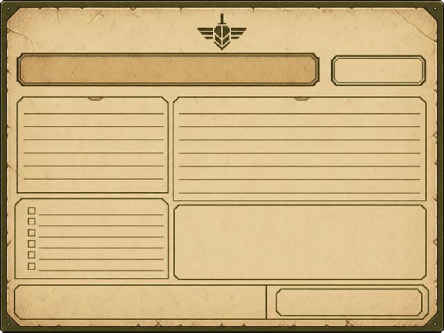

SPECIAL CASE AUTHORING / NARRATIVE × ADMINISTRATION
不要先写剧情，再随便找一张表单承载
每宗特殊剧情案件都应同时定义：申请人今天为什么必须来、玩家能够依据什么核验、文件哪里与现实冲突，以及这枚印章会如何改变下一次回访。

01
特殊剧情案件填写模板
左侧目录可以快速跳转。右侧各区块可直接作为策划文档结构使用。
01 · 基础信息
剧情案件 ID例如 STORY-D5-P44-MENG
出现日次与顺序例如 Day 5 / Case 2
申请人 / 代办人必须使用稳定人物 ID
所属故事线01 / 02 / 03 / 04
完整表号与表名不能写“主申请表”
手册章节与条目例如 CH.7 §44
02 · 真实生活需求
用一句具体的话说明申请人今天为什么必须来到窗口。不要写“申请人提交一份主申请表”，而要写“申请人需要在宵禁后前往第五诊疗站复查尚未愈合的工伤”。
一句话需求谁，在今天，需要完成什么，否则会失去什么？
03 · 材料组合
| 材料 | 它证明什么 | 它不能证明什么 | 可能错误 |
|---|---|---|---|
| 具体申请表 | 事项与公开诉求 | 申请人说法必然真实 | 漏填、日期、签名 |
| 身份证明 | 申请人是谁 | 当前实际住址 | 过期、号码不一致 |
| 居住证明 | 当前责任辖区 | 拥有本市身份 | 地址、签发机关 |
| 专项证明 | 医疗、工作、污染等事实 | 自动获得最高优先级 | 机构、期限、对象 |
| 当日通告 | 今天如何执行规则 | 过去发生的事实 | 版本、适用日期 |
04 · 表面错误与剧情矛盾
表面错误玩家第一次阅读就能检查的字段或附件问题。
剧情矛盾材料即使真实，现行规则仍无法完整解释的现实。
当前最多能确定不要让玩家靠猜编剧意图作决定。
当前仍不能确定为后续回访保留明确缺口。
05 · 人物表现
公开说法申请人愿意进入记录的版本。
回避问题什么问题会让他停顿、改口或拒答？
批准反应不必感谢，可以沉默或立刻追问后果。
驳回 / 延迟反应分别写，不把两者视为同一种失败。
06 · 玩家决定
| 决定 | 程序结果 | 当日生活后果 | 后续剧情后果 |
|---|---|---|---|
| 批准 | 填写 | 填写 | 填写 |
| 驳回 | 填写 | 填写 | 填写 |
| 延迟 / 补件 | 填写 | 填写 | 填写 |
| 例外处理 | 如无例外则删除本行 | 填写 | 填写 |
07 · 线索与回访
本案产生的新线索它的最小证明范围是什么？
此前解释它的线索来自哪个人物、机构或旧页？
之后重新使用它的案件明确日次、表号与用途。
能否进入正式档案原件、批注、副本还是私人证物？
回访不必总让同一人物再次排队，可以通过补件、夜间地点、秘书电话、手册批注、退回件或另一个人物携带的关联材料发生。
08 · 状态变量
案件结果批准 / 驳回 / 延迟 / 例外。
人物信任谁的信任改变，为什么？
证据状态未知 / 发现 / 保留 / 入档 / 封存。
程序风险是否越过机器、旧页或现行规则？
公共伤害具体谁失去住所、资源、医疗或记录？
General 池变化是否解锁新的普通案件错误类型？